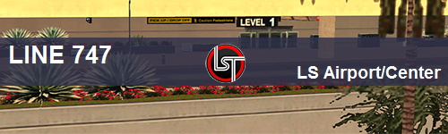
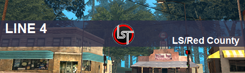
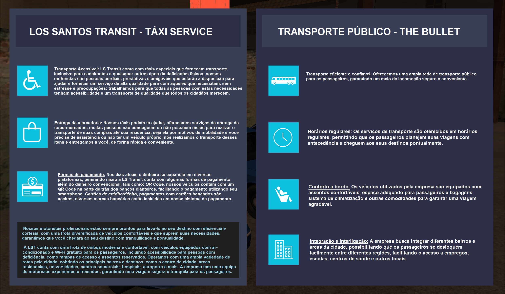

<!DOCTYPE html>
<html lang="pt-BR">
<head>
    <meta charset="UTF-8">
    <meta property="og:title" content="Los Santos Transit">
    <meta property="og:description" content="A maior empresa de transporte público!">
    <meta property="og:image" content="logov3.png">
    <meta property="og:url" content="lstransit.netlify.app">
    <meta name="viewport" content="width=device-width, initial-scale=1.0">
    <link rel="stylesheet" href="styles.css">
    <link rel="icon" href="fiveicon.png" type="image/png">
    <title>Los Santos Transit</title>
    <style>
        body {
             margin: 0;
            padding: 0;
            background-color: #c9c6c6; /* Cor de fundo cinza escuro */
            color: #000000; /* Texto em preto */
        }

        /* Estilo para o contêiner branco no topo */
        .topo-branco {
            height: 5vh; /* Altura do espaço em branco no topo da página */
            width: auto;
            background-color: #b82929; /* Cor de fundo branca */
            size: px;
        }

        .cabecalho-grande {
            height: 50vh; /* Define a altura do cabeçalho como metade da altura da viewport */
            position: relative; /* Permite posicionar os elementos filhos de forma absoluta */
        }

        .cabecalho-grande::before {
            content: ""; /* Cria um pseudo-elemento antes do conteúdo do cabeçalho */
            position: absolute; /* Posiciona o pseudo-elemento de forma absoluta */
            top: 0;
            left: 0;
            width: 100%;
            height: 100%;
            z-index: -1; /* Coloca o pseudo-elemento atrás do conteúdo do cabeçalho */
            animation: imagens-passando 50s initial; /* Define a animação das imagens passando no fundo */
            background-image: url('fundo.png'), url('rotaaero.png'), url('ls.png'); /* Adicione as URLs das imagens desejadas */
            background-size: cover;
            background-position: center;
            filter: brightness(0.2);
        }

        @keyframes imagens-passando {
            0% {
                background-position: 0 0; /* Inicia a animação com as imagens na posição inicial */
            }
            100% {
                background-position: 100% 0; /* Termina a animação com as imagens na posição final */
            }
        }
        
        .icone-pagina-inicial {
            display: flex;
            align-items: center;
            margin-left: 15px; /* Espaçamento à esquerda do ícone */
        }

        .icone-pagina-inicial img {
            width: 20px; /* Largura do ícone */
            height: 20px; /* Altura do ícone */
            margin-right: 2px; /* Espaçamento à direita do ícone */
        }

        .icone-servicos {
            display: flex;
            align-items: center;
            margin-left: 0px; /* Espaçamento à esquerda do ícone */
        }

        .icone-servicos img {
            width: 20px; /* Largura do ícone */
            height: 20px; /* Altura do ícone */
            margin-right: 0px; /* Espaçamento à direita do ícone */
        }

        /* Estilo para a barra */
        
        /* Estilo para as categorias */
        .categoria {
            text-decoration: none; /* Remove a formatação de link padrão */
            color: black; /* Cor do texto principal */
            font-weight: bold; /* Deixa o texto em negrito */
            font-size: 30px; /* Tamanho da fonte */
            transition: color 0.3s; /* Transição suave da cor ao passar o mouse */
            margin-bottom: 0px;
        }

        .categoria:hover {
            color: #ff5500; /* Cor de destaque laranja no hover */
        }
  
        .imageservice {
            display: flex;
            justify-content: flex-end; /* Alterado para flex-end */
            position: relative;
            height: 100px;
            width: 5%;
            margin-right: 0; /* Alterado para margin-right */
            margin-bottom:  35px;
        }


        .imageservice2 {
            position: relative;
            height: 100px;
            margin-right: 1px;
            margin-bottom: 50px;
        }

        .imageservice3 {
            position: relative;
            margin-right: 0px;
            margin-bottom: 5px;
            width: 100px;
            height: auto;
            max-width: 100%;
        }

        .iframe-container {
  position: relative;
  overflow: hidden;
  padding-top: 56.25%; /* Proporção de aspecto 16:9 (altere conforme necessário) */
}

.cabe {
  position: absolute;
  top: 0;
  left: 0;
  width: 100%;
  height: 100%;
}


    @media screen and (min-width:767px){
        .flex{
            flex-direction: column-reverse;
        }
    }

    @media screen and (max-width:1920px){
       .painel2
         .flex{
            flex-direction: column-reverse;
        }
            
            @media screen and (max-width:1920px){
       .painel2
         .flex{
            flex-direction: column-reverse;
        }
            
        iframe{
            max-width: 100%;
            height: 500px;
            width: px;
            aspect-ratio: 2/3;
        }
    </style>
    </style>
</head>
<body>
    <body>
    </body>
</body>
</html>
    <div class="topo-branco">
        
        <ul class="abas">
            <li class="icone-pagina-inicial">
                
                <a href="#pagina-inicial" class="minha-classe">Página Inicial</a>
            </li>
            <li class="icone-servicos">
                    <div>
            <li class="dropdown"> <!-- Adiciona uma classe "dropdown" para criar o efeito de subcategorias -->
    
                </div>
            </li>
        </ul>
    </div>

    <header>
        <div class="painel">
           <iframe src="a.html" width="1750px" height="600px" frameborder="0" scrolling="no"></iframe>
            =
            <div class="titulo">
                <h1></h1>
                <p></p>
            </div>
            <div class="linhas">
                <p></p>
                <p></p>
            </div>
            <nav>
                <ul class="abas">
                </ul>
            </nav>
        </div>
    </header>

    <section id="pagina-inicial">
        <div class="bloco-roxo">
            <div class="logo-empresa">
                
            </div>
                </div>
            </div>
        </div>
        <!-- Resto da sua seção de apresentação da empresa aqui -->
    </section>

    <section id="linhas" style="display: none;">
      <div class="container2">
        <a href="linha-77.html" class="imagemesquerda">
            <br>
            
        </a>
        <a href="linha-747.html" class="imagemcentro">
            <br>
            
        </a>
        <a href="linha-4.html" class="imagemdireita">
            <br>
            
        </a>
    </div>
    </section>

    <section id="serviços" style="display: none;">
        <div class="serviços">
            

    </section>

    <script>
   // Defina um array com as URLs das imagens que deseja usar
// Defina um array com as URLs das imagens que deseja usar
const imagens = ['rian1.png', 'rian2.png', 'rian4.png', 'rian3.png'];
let indiceAtual = 0;

// Função para alterar a imagem de fundo do cabeçalho
function trocarImagem() {
    const header = document.querySelector('header');
    header.style.backgroundImage = `url(${imagens[indiceAtual]})`;
    indiceAtual = (indiceAtual + 1) % imagens.length;
}

// Chame a função trocarImagem a cada 5 segundos (5000 milissegundos)
setInterval(trocarImagem, 5000);
    
// Função para tornar a imagem de fundo responsiva e centralizada
function tornarImagemDeFundoResponsiva() {
    const header = document.querySelector('header');
    header.style.backgroundSize = 'cover'; // Cobrir o elemento com a imagem
    header.style.backgroundRepeat = 'no-repeat';
    header.style.backgroundPosition = 'center center'; // Centralizar a imagem de fundo
}

// Chame a função para tornar a imagem de fundo responsiva quando a página carregar
window.addEventListener('load', tornarImagemDeFundoResponsiva);

        // Função para mostrar a seção desejada ao clicar nas abas
        function mostrarSecao(secaoId) {
            const secoes = document.querySelectorAll('section');
            secoes.forEach(secao => {
                if (secao.id === secaoId) {
                    secao.style.display = 'block';
                } else {
                    secao.style.display = 'none';
                }
            });
        }

        // Adicione um evento de clique às abas para mostrar as seções correspondentes
        const abas = document.querySelectorAll('.abas a');
        abas.forEach(aba => {
            aba.addEventListener('click', (event) => {
                event.preventDefault();
                const secaoId = event.target.getAttribute('href').substring(1);
                mostrarSecao(secaoId);
            });
        });

        const button = document.querySelector('dropbtn');

const disableButton = () => {
    button.disabled = true;
};

button.addEventListener('click', disableButton);

    </script>
</body>
</html>
